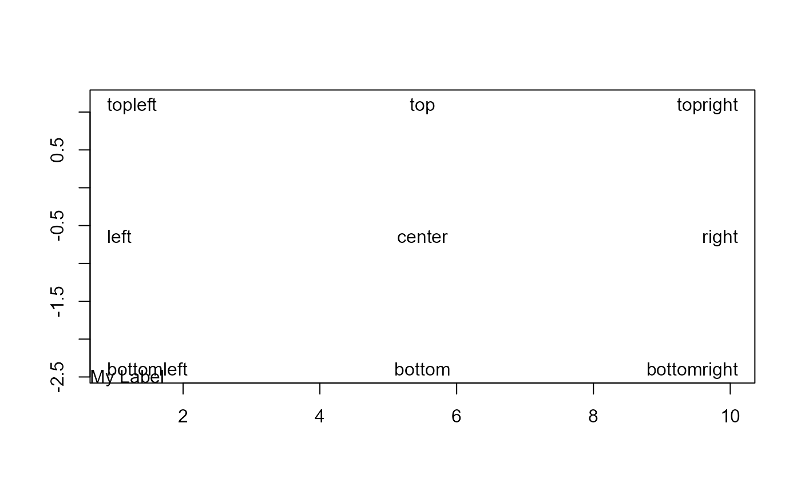

Returns the xy-coordinates and text-adjustment values for named anchor
positions such as "topleft", "center", etc., as used by
legend. Useful for placing text or other annotations at
consistent, region-aware positions.
Usage
abcCoords(
x = "topleft",
region = c("figure", "plot", "device"),
cex = NULL,
inset = 0
)Arguments
- x
A character string specifying the anchor position. One of
"bottomright","bottom","bottomleft","left","topleft","top","topright","right", or"center". Partial matching is supported.- region
One of
"figure"(default),"plot", or"device". Determines the coordinate region used.- cex
Character expansion factor. If
NULL(default), the currentpar("cex")is used.- inset
Inset distance from the boundary, specified in lines of text (character heights/widths). May be a scalar (applied to both x and y) or a length-2 vector (x inset, y inset). Default
0.
Value
A list with two components:
xyA list with elements
xandygiving the anchor coordinates in user space.adjA numeric vector of length 2, suitable for the
adjargument oftext.
Details
The inset is computed in character units via strwidth and
strheight, making it robust to device resizing, font
changes, and plot-range scaling.
Three regions are supported:
"plot"The inner plot area (
par("usr"))."figure"The figure region within the device, accounting for
par("fig")."device"The full device area.
Note
The positioning logic is adapted from legend.
See also
Other graphics.utils:
axisBreak(),
barText(),
boxedText(),
colLegend(),
degToRad(),
errBars(),
lineSep(),
lineToUser(),
lines.lm(),
mar(),
preview(),
spreadOut(),
stamp(),
textLegend(),
titleRect(),
unit()
Examples
plot(x = rnorm(10), type = "n", xlab = "", ylab = "")
# coordinates only
abcCoords("bottomleft")
#> $xy
#> $xy$x
#> [1] -0.8287469
#>
#> $xy$y
#> [1] -3.399057
#>
#>
#> $adj
#> [1] 0 0
#>
# place text at a named position
xy <- abcCoords("bottomleft", region = "plot")
text(x = xy$xy$x, y = xy$xy$y, labels = "My Label",
adj = xy$adj, xpd = NA)
# all nine positions with inset
sapply(c("topleft", "top", "topright",
"left", "center", "right",
"bottomleft", "bottom", "bottomright"),
function(p) {
xy <- abcCoords(p, region = "plot", inset = 1)
text(x = xy$xy$x, y = xy$xy$y,
labels = p, adj = xy$adj, xpd = NA)
})

#> $topleft
#> NULL
#>
#> $top
#> NULL
#>
#> $topright
#> NULL
#>
#> $left
#> NULL
#>
#> $center
#> NULL
#>
#> $right
#> NULL
#>
#> $bottomleft
#> NULL
#>
#> $bottom
#> NULL
#>
#> $bottomright
#> NULL
#>